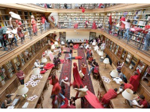

Paristechinois
Mines的历史及其在法国的地位
Mines的教学理念
在具体介绍Mines的教学理念之前，应当先提一下法国的教育体系。与中国相对单一的“高考-本科-硕士-博士”统一培养模式不同，法国几乎在每个领域都有自己独特的一套培养方式。以理工科类专业学生的发展模式为例，高中毕业之后往往有两条发展路线。第一个选择是去大学读本科，这条路相对门槛较低，几乎没有入学考试，学生可以根据自己的兴趣选择学校；另一个选择是参加预科班，进行为期两年的高强度集训，然后参加各个高等学院（Grand école）的选拔考试。通常成绩优异，有上进心的法国学生都会选择第二条发展路线，因而高等学院的入学考试竞争非常激烈，丝毫不亚于高考。同时，由于有优秀的生源以及丰富的学校资源，高等学院的学生毕业之后的职业发展往往也比较一帆风顺。
Mines作为高等学院当中的佼佼者，在多年的教学当中建立起了一套独特而有效的教学模式。其核心思想可以总结如下：
a.精英教育。
虽然精英教育是各大高等学院的共同理念，但是Mines把这种特点发挥到了极致。作为一所年预算为6000万欧的学校，Mines一年只招收120名工程师学生，而这些学生将在第二年进入17个不同的专业。也就是说平均每个专业只有不到十名学生。而每一个专业都有相关的老师为学生的学习和就业提供指导。在这样一个小规模的学校里，每一个学生都能够感受到极强的存在感，也能够更好的与学校互动。
b.通才教育。
Mines非常强调学生的综合素质，并要求学生在各个领域均能有所了解。在二年级，学生将会学习经济，物理，能源，材料，运筹学等多学科的课程。而三年级学生将会将主要精力放在法律，会计等与公司管理相关的课程。课程的密度极大，且进度很快，往往在一个月之内便上完国内同专业需要一学期乃至一年才能讲完的内容。事实上这种“急速授课”的预期效果并不要求学生能够完全掌握涉及到的专业知识，而是希望学生能够了解相关领域的发展情况，并能够理解该领域专业人员的工作成果。
Mines的这种通才教育是为培养法国工业届的管理人才做准备的。法国的职业教育非常发达，每年都会培养出大量的专业技术人员。然而要有效的完成一个项目，往往需要不同领域的专业人才通力合作。凭借Mines提供的平台，学校的毕业生可以较容易的进入自己感兴趣的行业，凭借自己的多学科背景将所在团队的各类人才组织起来，并通过自己的行业敏感性正确判断项目的发展方向。
c.灵活的课程设置。
Mines 的课程设置非常多元化。有长达一年的大型项目，也有一周就结课的导论类课程；既有需要十几个学生合力完成的产品设计，也有两人组队的case study。无论课程的长度以及参与人数，总的来说都是一个“了解任务-接受挑战-分析情况-完成项目”的过程。通常在第一节课上，老师就会告诉大家，我们的课程将围绕解决“XX问题”展开，为了解决这个问题，你们将会需要怎样怎样的知识，我们将会在接下来的n堂课程里向大家介绍，希望大家好好学习，顺利完成任务。具体的课程开展情况我将会在后面的部分详细介绍。
d.职业导向的培养方案。
作为一个工程师学校，Mines的教育是高度职业导向的。一方面课程与业界紧密联系，并不时邀请业内人士为同学们做讲座，介绍目前的前沿发展；另一方面，有很多课程都是帮助同学们适应未来职业生涯的，比如帮助大家写CV以及动机信，训练presentation的能力，根据各自的职业规划组织模拟面试以及行业分析小组等等。所有课程的设置都是为了帮助同学找到理想的工作，并能更好的适应今后的职业生涯。
除了在学校的课程之外，同学们还被要求到企业实习，在实践中掌握技能。在两年的教学规划中，我们需要至少完成一长一短两个实习，总时长为九个月。在实习的过程中，学生能够更好的理解企业运作模式，同时对于自己所学知识将如何为公司提供价值产生新的理解，以方便针对将来的需要调整自己的学习计划。实习本身也是寻找自己兴趣所在的过程，能够帮助大家在毕业之前确定自己理想的行业。Mines强大的校友网以及在业界良好的声誉将在很大程度上帮助其学生找到优质的实习，同时其学生在实习的过程中也将得到更多的重视，获得更多的锻炼机会。
e.活跃的学校文化。
ParisTech的每一所学校都有自己的文化与传统，相互之间差别很大。各个学校的毕业生身上或多或少都会体现出学校的特点，而学生们往往也以自己学校的传统为荣。在这些学校当中，Mines学生积极主动、外向开朗的特点尤为突出。
Mines的学生通常自称为Mineur或者Minette，在经历过地底巴黎的洗礼之后获得这个称谓（具体细节之后将会提到）。学生们进入学校之后会由高年级带着参加各种活动，融入到学校的氛围当中。在这里，我仅以一个中国人的眼光说一说尤为突出的几点：
1.乐于接受挑战
如前面说过的那样，Mines 的课程常常以一个个项目的形式展现，在学校的学习过程其实就是完成一个个挑战的过程。在这样的氛围下，学生对于如何面对挑战，如何有效的动用一切力量完成任务都有相当不错的把握。同时，老师们在项目开始的时候往往都会进行各式各样的总动员，让学生相信“虽然过程很辛苦，但是我们在做世界上最酷的事情。”这种动员与宣传能对学生产生潜移默化的效果，让他们以更积极的态度面对自己的工作。
2.习惯高强度、高压力的工作环境
Mines的课程设置相当紧凑，经常在高强度的外出活之后紧接而来的便是连续几天的考试。学生们必须学会迅速转换角色，以最短的时间完成准备工作，调整到最佳状态。这种精神可以总结为“疯狂的玩，努力地学，绝不浪费一分钟时间。”
3.强于交流，擅长演讲
学校的很多活动需要各个组织的支持（比如学生会竞选需要各大企业的资金支持，社团活动需要同学们的人力支持，而与企业之间合作的交流活动则需要学校的政策支持），所以Mines的学生往往都掌握了娴熟的交流以及游说技能。为了完成自己的项目，同学们不但要找到合适的人，并且必须在有限的时间里说服他们参加到自己的项目当中来。
4.疯狂之中见真情
这其实是法国工程师学校的共同传统，只不过Mines做得尤其过火罢了。虽然工程师学生们在各种正式场合都着装得体，风度偏偏，但每个月中有那么几天，大家会在指定的时间，来到指定的地点，尽情的放肆、胡闹。在Mines比较典型的活动是“老巢餐会”，地点就在学校宿舍的活动室。在这里，同学们喝着廉价的红酒，唱着走调的“工程师之歌”，手舞足蹈，胡作非为（具体的内容不便在这里细说，来了之后自然就知道了^.^）。这种看似疯狂的行为其实是有其内在价值的，至少从两方面来说，效果很明显。首先，它让学生们在紧张的学习之余能够尽情放松一下，确保了学生身心的健康发展；其次，这种一起犯傻的集体活动能够在很大程度上增加团体凝聚力，让学生对学校，尤其是校园生活产生强烈的眷恋以及归属感。
作者简介：
黄浩
2006-2010：北京大学物理系
2010至今：Mines Paristech
黄浩的Mines学习总结

2012年5月13日星期日